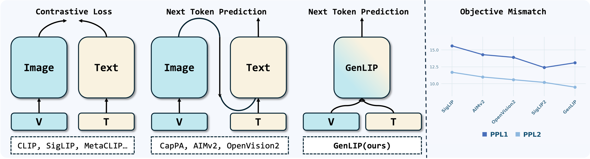
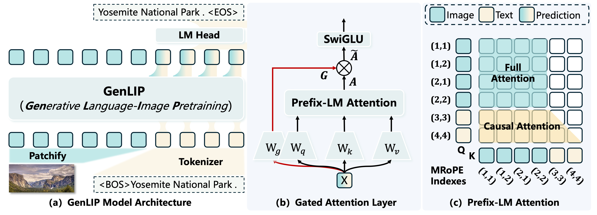
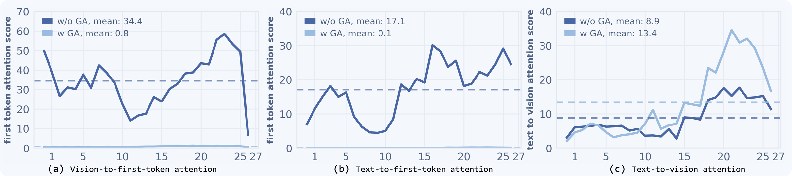
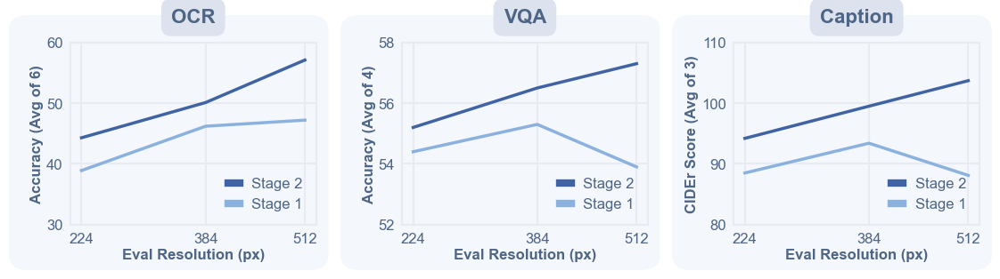
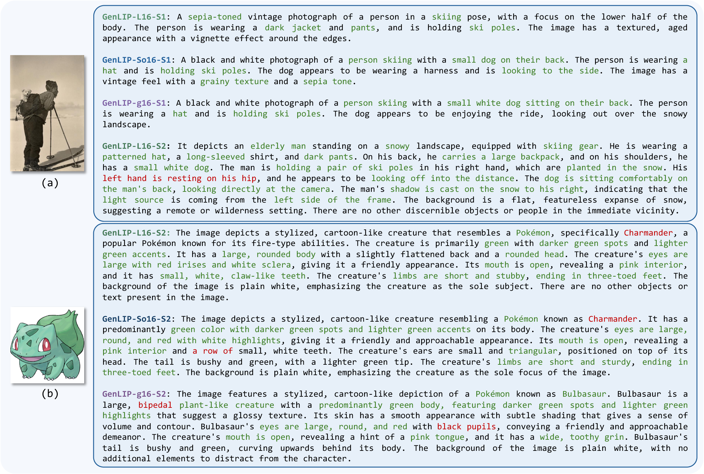
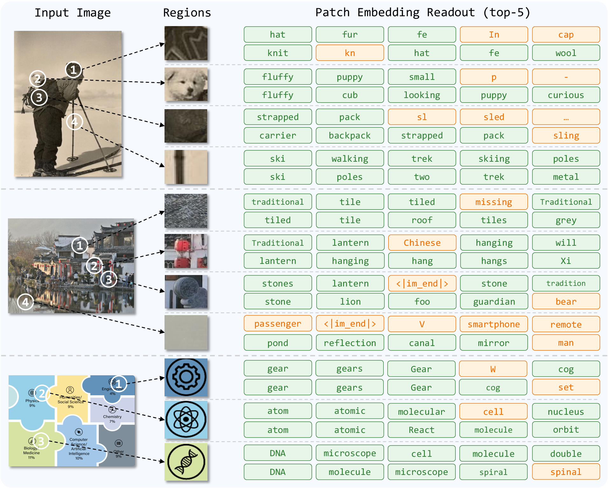
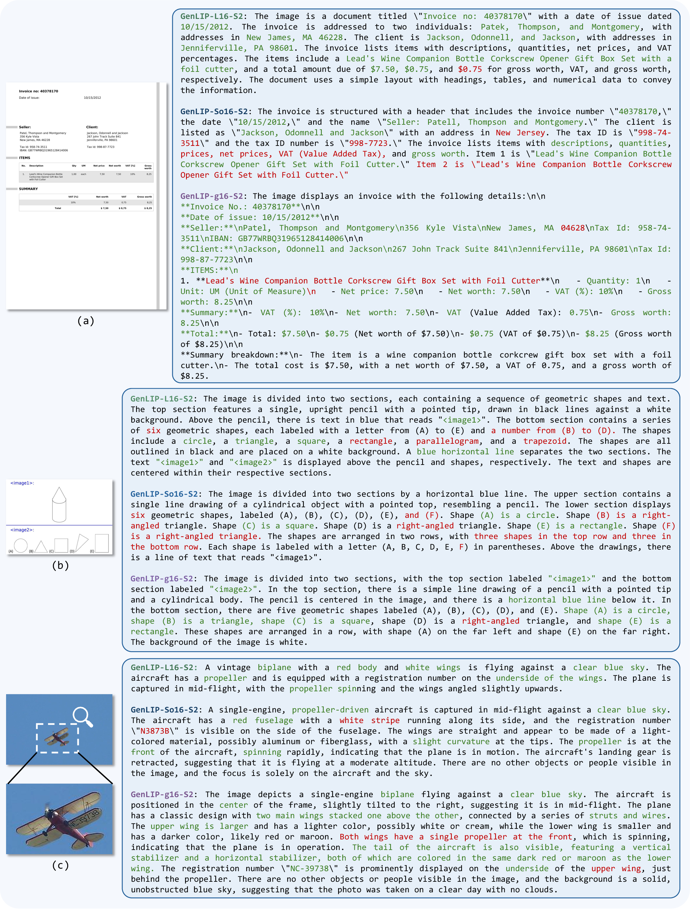

Generative Language-Image Pre-training
Let ViT Speak
One Transformer. One language modeling objective. A vision encoder that learns by predicting words.
1 Beijing Jiaotong University
2 ByteDance
3 Nanyang Technological University
4 Beijing Academy of Artificial Intelligence
*Equal contribution †Corresponding authors
Key results
GenLIP-g/16, frozen encoder
under the same evaluation
versus 40B for SigLIP2
at native aspect ratios
A simpler way to learn vision.
Generative Language-Image Pre-training (GenLIP) trains a Vision Transformer to predict language tokens directly from visual tokens. One Transformer jointly models images and text, using a standard language modeling objective without contrastive batch construction or an additional text decoder.
With 8B seen samples in its first pretraining stage, GenLIP matches or surpasses strong vision-encoder baselines trained on up to 40B samples. A second stage of native-aspect-ratio adaptation further improves detail-sensitive tasks, including OCR and chart understanding.
Pretrain by speaking. Deploy as a vision encoder.

The method
Language supervision. Visual representations.
Learn from image-caption pairs, then use the same backbone to supply visual features to an MLLM.
One shared Transformer
Image patches precede text tokens in one sequence. Multimodal rotary position embeddings (MRoPE) encode position.
A visual prefix, a text objective
Image tokens attend bidirectionally; text tokens attend causally. Next-token prediction loss applies only to text.
Gated attention
Input-dependent gates reduce first-token attention sinks, improve training stability, and preserve more distributed visual features.

Learn at a fixed resolution
8B seen samples over 1B unique Recap-DataComp-1B pairs. Eight epochs at 224 × 224 resolution.
Adapt to native aspect ratios
39M samples, one epoch. BLIP3o-Long-Caption, Infinity-MM (stage 1), and CapRL. Between 16 and 1,024 visual tokens per image.
Why gated attention matters
The controlled So/16 study shows less attention concentrating on the first sequence token, with stronger text-to-vision attention in deeper layers. This supports the gate's role in stabilizing visual representation learning.

Stronger features. Fewer seen samples.
Consistent overall gains across model scales, with the clearest improvements on document understanding and OCR.
A shared evaluation setup
Frozen vision encoders · 576 visual tokens · Qwen2.5-Instruct · more than 3M LLaVA-OneVision instruction-tuning samples. All encoders use the same token budget and a two-layer MLP projector.
Qwen2.5-7B · frozen vision encoder
Table 4 in paper ↗| Model | Arch | Samples | Doc/OCR | MME-P | TextCaps | All avg. |
|---|---|---|---|---|---|---|
| CLIP | L/14 | 12.8B | 48.2 | 1316 | 127.9 | 58.8 |
| AIMv2 | L/14 | 12.0B | 48.3 | 1240 | 130.5 | 58.6 |
| OpenVision2 | L/16 | 12.8B | 52.4 | 1325 | 133.8 | 64.9 |
| SigLIP | L/16 | 40.0B | 52.0 | 1275 | 131.1 | 64.5 |
| GenLIP | L/16 | 8.0B | 59.2 | 1320 | 139.4 | 69.0 |
| SigLIP2 | So/16 | 40.0B | 56.7 | 1422 | 139.3 | 69.4 |
| GenLIP | So/16 | 8.0B | 62.0 | 1424 | 142.1 | 71.8 |
| SigLIP2 | g/16 | 40.0B | 56.6 | 1422 | 142.7 | 68.9 |
| GenLIP | g/16 | 8.0B | 63.5 | 1483 | 144.8 | 73.6 |
Compare with the smaller Qwen2.5-1.5B backbone
Qwen2.5-1.5B · frozen vision encoder
Table 3 in paper ↗| Model | Arch | Samples | Doc/OCR | MME-P | NoCaps | All avg. |
|---|---|---|---|---|---|---|
| CLIP | L/14 | 12.8B | 39.1 | 1218 | 55.5 | 53.1 |
| AIMv2 | L/14 | 12.0B | 39.6 | 1157 | 80.1 | 55.7 |
| OpenVision2 | L/16 | 12.8B | 44.3 | 1230 | 84.3 | 58.7 |
| SigLIP | L/16 | 40.0B | 42.4 | 1203 | 84.0 | 56.9 |
| SigLIP2 | L/16 | 40.0B | 45.0 | 1165 | 82.9 | 58.7 |
| GenLIP | L/16 | 8.0B | 49.3 | 1258 | 82.6 | 61.5 |
| SigLIP2 | So/16 | 40.0B | 46.8 | 1220 | 84.3 | 60.6 |
| GenLIP | So/16 | 8.0B | 50.1 | 1215 | 87.5 | 62.6 |
| SigLIP2 | g/16 | 40.0B | 47.3 | 1284 | 84.4 | 61.5 |
| GenLIP | g/16 | 8.0B | 53.2 | 1256 | 88.3 | 65.2 |
Reading the tables. Doc/OCR averages seven tasks. All avg. is the unweighted mean of 14 benchmarks, with MME-P divided by 20 and captioning CIDEr scores unchanged. The selected columns above do not reproduce that full mean. GenLIP's 8B denotes Stage 1 seen samples; Stage 2 adds 39M samples.
Joint fine-tuning
With the vision encoder unfrozen, GenLIP-So/16 reaches 68.5 at 576 patches and 70.3 at 729 patches in the standard LLaVA-NeXT setting.
Table 6 ↗Broader evaluation
The advantage also holds in the Cambrian-1-style suite. With Qwen2.5-7B, GenLIP-g/16 scores 66.0 versus 63.0 for SigLIP2-g/16.
Table 13 ↗Scaling signal. Performance improves with more pretraining, but gains flatten between 4B and 8B samples, especially for VQA and captioning. Plot averages follow the task groups labeled in the figure.

Resolution signal. Native-aspect adaptation improves detail-sensitive multimodal understanding. These curves use the task groups labeled in the figure, distinct from the seven-task Doc/OCR table average.
Inside the representation
What does "speak" reveal?
Caption generation and patch readout offer a closer look at the visual-language alignment learned during pretraining.
Select a figure to read it at full size.

Generation probe. Larger models and native-aspect adaptation produce more detailed descriptions. These qualitative probes illustrate learned alignment; GenLIP is deployed as a vision encoder.

Patch semantics. Selected regions in So/16 and g/16 align with meaningful language concepts, with more stable readouts in g/16. This behavior is not established for L/16.
Inspect the OCR examples and failure cases

Doc/OCR behavior. Long number strings, precise spatial layouts, and tiny text remain challenging, even when descriptions are fluent.
What the evidence tells us.
Strong results as an MLLM vision encoder, with tradeoffs that remain visible.
Controlled pretraining and language initialization
In Table 8, GenLIP reaches 57.2 versus 55.9 for OpenVision2 and 54.4 for SigLIP after 2B first-stage samples. The baselines additionally receive 0.2B high-resolution adaptation samples, while GenLIP is evaluated directly after Stage 1.
In the separate 1B-sample study (Table 9), training the gated SAIL-style architecture from scratch scores 56.0, compared with 54.8 using Qwen3 initialization. The paper interprets this as possible language-prior bias in visual grounding, not a universal claim about language initialization.
Read the ablations ↗Discriminative features and retrieval
Native-aspect adaptation improves multimodal understanding but lowers ImageNet-1K accuracy at every model scale. GenLIP-g/16 changes from 85.2 to 83.0 top-1 accuracy, and reaches 44.5 mIoU on ADE20K. GenLIP remains behind SigLIP2 on these discriminative evaluations and on zero-shot retrieval.
Table 11 ↗ Table 12 ↗Scope and remaining limitations
The experiments use the academic-scale LLaVA-NeXT framework; transfer to frontier MLLMs remains to be established. Scaling beyond 1B unique pretraining pairs is unverified, and high-quality captions carry acquisition costs. Qualitative generations can still misread text or spatial relations.
Read the limitations ↗Explore the models.
Three model scales, with checkpoints after native-aspect-ratio adaptation. See the code repository for training and configuration details.
GenLIP-L/16
300M parameters 24 layers · 1,024 hidden dimensions
Model details ↗GenLIP-So/16
400M parameters 27 layers · 1,152 hidden dimensions
Model details ↗GenLIP-g/16
1.1B parameters 40 layers · 1,536 hidden dimensions
Model details ↗Page content follows the paper dated .
BibTeX
@article{fang2026letvitspeakgenerative,
title={Let ViT Speak: Generative Language-Image Pre-training},
author={Yan Fang and Mengcheng Lan and Zilong Huang and Weixian Lei and Yunqing Zhao and Yujie Zhong and Yingchen Yu and Qi She and Yao Zhao and Yunchao Wei},
journal={arXiv preprint arXiv:2605.00809},
year={2026}
}